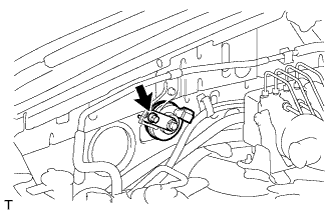
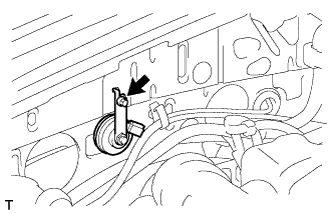

АВАРИЙНАЯ СИРЕНА В СБОРЕ > СНЯТИЕ |
| 1. СНИМИТЕ КОРПУС ВОЗДУШНОГО ФИЛЬТРА |
Для моделей с 1GR-FE:
Снимите корпус воздушного фильтра (Нажмите здесь).
Для моделей с 1KD-FTV:
Снимите корпус воздушного фильтра (Нажмите здесь).
Для моделей с 5L-E:
Снимите корпус воздушного фильтра (Нажмите здесь).
Для моделей с 2TR-FE
Снимите корпус воздушного фильтра (Нажмите здесь).
| 2. СНИМИТЕ АВАРИЙНУЮ СИРЕНУ В СБОРЕ (для моделей с 5L-E) |
|  |
Отсоедините разъем.
Выверните болт и снимите аварийную сирену.
| 3. СНИМИТЕ АВАРИЙНУЮ СИРЕНУ В СБОРЕ (кроме моделей с 5L-E) |
|  |
Отсоедините разъем.
Выверните болт и снимите аварийную сирену.